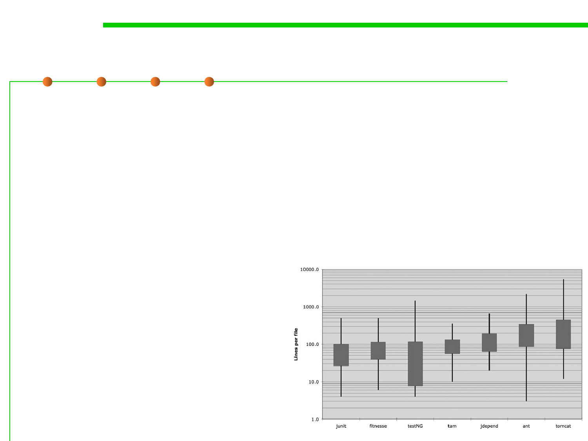

Length Limits
4.1 Construction for Understandability
▪ Limit the Number of Java Statements per Line to 1
– Multiple statement can hide code to the casual observer
– Makes stepping through code difficult
– Long lines cannot be handled well by many terminals and tools.
▪ Limit the Length of Methods
– A method should be about a “page of code”
– Around 30 lines of code
▪ Limit the Length of Source
Files: in Java, file size is closely
related to class size.
– Typically 200 lines long, with an
upper limit of 500
– Small files are easier to understand